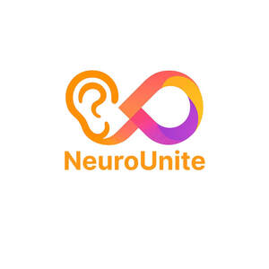

Trade Mark Journal No.2025/046 14 November 2025
UK00004287931 2 November 2025 (35,41,44)

- Class 35
- Sales promotions at point of purchase or sale, for others; Sales promotion; Publicity and sales promotion; Promotion services; Business promotion; Publicity and sales promotion services; Promotion [advertising] of concerts; Advertising and promotion services; Modelling for advertising or sales promotion; Promotion [advertising] of business; Modeling for advertising or sales promotion; Sales promotion services; Promotion [advertising] of travel; Advertising, marketing and promotion services; Marketing, advertising and promotion services; Brand creation services (advertising and promotion); Sales promotion for others; Modeling services for advertising or sales promotion; Promotion of special events; Export promotion services; Administration of sales promotion incentive programs; Advertising services for the promotion of e-commerce; Business promotion services; Advertising services for the promotion of beverages; Promotion, advertising and marketing of on-line websites; Computerised business promotion; Modelling and models for advertising or sales promotion; Sales promotion through customer loyalty programs; Consultancy relating to advertising and promotion services; Modelling agency services for sales promotion purposes; Sales promotion for third parties; Promotion of goods and services through sponsorship; Promotion of fairs for trade purposes; Sales promotion using audiovisual media; Development of promotional campaigns; Organization of fashion parades for sales promotion purposes; Advisory services relating to sales promotion; Advertising particularly services for the promotion of goods; Consultations relating to business promotion; Promotional marketing; Advertising and promotion services and related consulting; Promotion of goods through influencers; Sales promotion services for third parties; Search engine optimisation for sales promotion; Publicity and promotional services; Search engine optimization for sales promotion; Business consultancy services relating to the promotion of fund raising campaigns; Advertising, marketing and promotional services; Advertising, promotional and marketing services; Marketing, advertising, and promotional services; Administration of sales and promotional incentive schemes; Promotion services relating to esports events; Consultancy relating to sales promotions; Providing assistance in the field of business promotion; Sales promotion for others through trading stamp schemes; Promotion of musical concerts; Distribution of advertising, marketing and promotional material; Organisation of customer loyalty programs for commercial, promotional or advertising purposes; Promotion of goods and services through sponsorship of sports events; Modelling agency services relating to sales promotions; Promotion of sports competitions and events; Promotion of goods and services through sponsorship of international sports events; Promotional advertising relating to philosophical training; Promotional and advertising services; Promotional advertising services; Advertising and promotional services; Organization, operation and supervision of sales and promotional incentive schemes; Organisation, operation and supervision of sales and promotional incentive schemes; Management of customer loyalty, incentive or promotional schemes; Arranging promotion of charitable fundraising events; Chamber of commerce services for the promotion of trade; Promotion of goods and services for others; Copywriting for advertising and promotional purposes; Customer club services, for commercial, promotional and/or advertising purposes; Dissemination of advertising and promotional materials; Dissemination of advertising, marketing and publicity materials; Developing promotional campaigns for business; Customer loyalty services for commercial, promotional and/or advertising purposes; Sales promotion for others provided through the distribution and the administration of privileged user cards; Promoting the goods and services of others through the administration of sales and promotional incentive schemes involving trading stamps; Advertising services to promote the sale of beverages; Business promotion services provided by audio/visual means; Promotional advertising for exploration projects; Promotional services; Promoting the sale of goods and services of others through the distribution of printed material and promotional contests; Advertising and publicity; Publicity and advertising; Advertising, including promotion of products and services of third parties through sponsoring arrangements and licence agreements relating to international sports' events; Consultancy services relating to advertising, publicity and marketing; Advertising, promotional and public relations services; Recruitment advertising; Prize draws (Organising of -) for promotional purposes; Consultancy relating to the organisation of promotional campaigns for business; Distribution of promotional matter; Business promotion services provided by telex; Promotional advertising relating to philosophical instruction; Advertising and publicity services; Promotion of insurance services, on behalf of third parties; Advertising services to promote public awareness in the field of social welfare; Chamber of commerce services for the promotion of businesses; Promoting the sale of goods and services of others through promotional events; Chamber of commerce services for the promotion of commerce; Promotional management of celebrities; Advertising services to promote public awareness of the benefits of shopping locally; Sales promotion for others by means of privileged user cards; Trade promotional services; Business promotion services provided by telephone; Advertising, marketing and promotional consultancy, advisory and assistance services; Administration of contests for advertising purpose; Management assistance for promoting business; Advertising and marketing; Advertising services to promote public awareness of social issues; Distribution of advertising announcements; Promotion of financial and insurance services, on behalf of third parties; Preparation of advertising campaigns; Advertising flyer distribution; Organization of events, exhibitions, fairs and shows for commercial, promotional and advertising purposes; Administration of incentive award programs to promote the sale of the goods and services of others; Event marketing; Organisation of promotions using audiovisual media; Research services relating to advertising and marketing; Product marketing; Referral marketing; Recruitment services for sales and marketing personnel; Distribution of promotional material; Organisation of promotions using audio-visual media; Advertising services to promote public awareness of environmental matters; Arranging advertising and promotional contracts for others; Promotional marketing services using audiovisual media; Promoting the sale of fashion goods through promotional articles in magazines; Advertising and marketing services; Publicity publication services; Arranging and conducting marketing promotional events for others; Advertising services to promote public awareness of environmental issues and initiatives; Developing promotional campaigns for businesses; Advertising services relating to the commercialization of new products; Prize draws (Organising of -) for advertising purposes; Organisation of exhibitions and trade fairs for business and promotional purposes; Advertising services to promote public awareness of medical conditions; Marketing; Publicity brochure distribution; Advertising services to promote public awareness of medical issues; On-line advertising and marketing services; Promoting the goods and services of others through the distribution of discount cards; Promoting the goods and services of others by means of a loyalty rewards card scheme; Administration of competitions for advertising purposes; Providing marketing consulting in the field of social media; Media relations services; Providing business information in the field of social media; Advertising and marketing services provided by means of social media; Advertising via electronic media and specifically the internet; Rental of advertising time on communication media; Media buying services; Presentation of companies on the Internet and other media; Provision of advertising space on electronic media; Market research services relating to broadcast media; Presentation of financial products on communication media, for retail purposes; Political advertising services; Development of business organization strategies relating to corporate social responsibility; Retail purposes (Presentation of goods on communication media, for -); Presentation of goods on communication media, for retail purposes; Communication media (Presentation of goods on -), for retail purposes; Presentation of goods on communications media, for retail purposes; Dissemination of advertising via online communications networks; Provision of advertising space, time and media; Advertising in the popular and professional press; Arranging subscriptions to information media; Online advertising via a computer communications network; On-line advertising on computer communication networks; Dissemination of advertisements and of advertising material [flyers, brochures, leaflets and samples]; Design of advertising flyers; Rental of billboards [advertising boards]; Distribution of flyers, brochures, printed matter and samples for advertising purposes; Dissemination of advertising material [leaflets, brochures and printed matter]; Advertising in periodicals, brochures and newspapers; Advertising flyer distribution for others; Displaying advertisements for others; Dissemination of advertising material [leaflets, brochure and printed matter]; Distribution and dissemination of advertising materials [leaflets, prospectuses, printed material, samples]; Design of advertising brochures; Hire of advertising billboards; Distribution of advertising leaflets; Banner advertising; Rental of advertisement billboards; Advertisement billboards (Rental of -); Distribution of advertising brochures; Issuing of publicity leaflets; Publicity leaflets (Issuing of -); Preparing audio-visual presentations for use in advertising; Providing business information via a web site; Providing business information via a website; Website traffic optimisation; Website traffic optimization; Web site traffic optimisation; Web site traffic optimization; Compilation of advertisements for use as web pages on the Internet; Compilation of advertisements for use on internet web pages; Advertising of business web sites; Compilation of advertisements for use as web pages; Providing marketing information via websites; On-line promotion of computer networks and websites; Promoting the designs of others by means of providing online portfolios via a website; Promoting the artwork of others by means of providing online portfolios via a website; Composing advertisements for use as web pages; Marketing services in the field of web site traffic optimization; Promoting the music of others by means of providing online portfolios via a website; Business information services provided online from a computer database or the internet; Business information services provided on-line from a computer database or the internet; Rental of advertising space on web sites; Providing an on-line commercial information directory on the internet; Providing a directory of third party web sites to facilitate business transactions; Providing a searchable online advertising guide featuring the goods and services of other on-line vendors on the internet; Business management consultancy in the field of executive and leadership development; Career advisory services (other than education and training advice); Employment recruiting consultancy; Recruitment of executive staff; Staff recruitment consultancy services; Recruiting of office support staff; Administrative management of health care clinics; Management of health care clinics for others; Health care cost management; Health care cost review; Administration of prepaid health care plans; Compilation of statistics relating to health care utilization; Inventorying merchandise; Merchandising; Merchandizing; Display services for merchandise; Product merchandising; Online retail services for downloadable virtual clothing; Trade marketing [other than selling]; Retail services via catalogues related to beer; Distribution of promotional leaflets; Distribution of publicity leaflets; Preparation of publicity leaflets; Distribution of publicity materials (flyers, prospectuses, brochures, samples, particularly for catalogue long distance sales) whether cross border or not; Distribution of publicity materials, namely, flyers, prospectuses, brochures, samples, particularly for catalogue long distance sales [whether crossborder or not]; Distribution of printed advertising matter; Distribution of advertising mail and of advertising supplements attached to regular editions; Distribution of advertising material by post; Publication of publicity materials; Arranging the distribution of advertising samples in response to telephone enquiries; Design of advertising logos; Advertising.
- Class 41
- Education; Vocational education; Health education; Pre-school education; Education and training; Academies [education]; Education and instruction; Services of schools [education]; Education services; University education services; Academy services (Education -); Education academy services; Academy education services; Education, teaching and training; Vocational education and training services; Education (Religious -); Education and instruction services; Training and education services; Education and training services; Education examination; Provision of education courses; Educational services for providing courses of education; Career counseling [education]; Provision of training and education; Provision of education and training; Higher education services; Providing of education; Physical education; Education academy services for teaching languages; Entertainment, education and instruction services; Education information; Information (Education -); Medical education services; Education services relating to vocational training; Primary education services; Adult education services; Residential education courses; Computer education training services; Linguistic education and training services; Boarding school education; Education and training consultancy; Primary education services relating to literacy; Physical education instruction; Further education; Physical health education; Legal education services; Technological education services; Online education services; Lingual education; Management of education services; Management education services; Education services relating to health; Educational services provided by institutes of higher education; Vocational education relating to personal safety; Education and training services in the field of occupational health and safety; Adult education services relating to medicine; Research in the field of education; Education and training in the field of occupational health and safety; Training or education services in the field of life coaching; Career counselling [training and education advice]; Competitions (Organization of -) [education or entertainment]; Educational and training services relating to healthcare; Coaching; Coaching [training]; Career counselling and coaching; Coaching services; Personal coaching [training]; Life coaching (training); Sports tuition, coaching and instruction; Political speech training and coaching; Political debate training and coaching; Educational services in the nature of coaching; Computerised training in career counselling; Training in the field of business management; Training in business management; Training consultancy; Education and training in the field of business management; Career counselling relating to education and training; Training of teachers; Staff training services; Training; Teaching academy services; Medical training and teaching; Management training consultancy services; Providing training courses on business management; Training in administration; Courses for the development of consulting skills; Organisation of training seminars; Consultancy services relating to the education and training of management and of personnel; Organising of business training; Training and instruction; Training in the field of advertising; Education academy services for teaching construction drafting; Business training services; Career and vocational counselling; Training services in the field of project management; Courses (Training -) relating to management; Training services relating to management consultancy; Training services; Organisation of training; Organisation of training courses; Health and wellness training; Education in the field of occupational health and safety; Health club services [exercise]; Providing of training in the field of health care and nutrition; Training services relating to health and safety.
- Class 44
- Medical advice for individuals with disabilities; Medical advice for persons with disabilities; Providing service animals to individuals with disabilities; Learning disability screening services; Providing service animals to persons with disabilities; ADHD screening services; Psychological therapy for infants; Individual and group psychology services; Diagnosis of visual processing disorders; Psychological diagnosis services; Medical consultancy for selecting appropriate wheelchairs, commodes, disability hoists, walking frames and beds; Psychiatry; Advice relating to the medical needs of elderly people; Psychologist (Services of a -); Services of a psychologist; Medical services for the diagnosis of conditions of the human body; Psychiatric services; Holistic psychotherapy; Occupational psychology services; Attention Deficit Hyperactivity Disorder screening services; Insomnia therapy services; Individual medical counseling services provided to patients; Counselling relating to the psychological treatment of medical ailments; Personality testing [mental health services]; Mental health services; Psychological counselling; Psychotherapy; Mental health screening services; Health care; Health counseling; Personality assessment services [mental health services]; Health care in the nature of health maintenance organizations; Health counselling; Public health counseling; Psychological care; Medical health assessment services; Health care relating to hydrotherapy; Health clinic services [medical]; Health care consultancy services [medical]; Occupational health consultancy; Health screening; Health clinic services; Health assessment services; Consultancy relating to health care; Health consultancy; Managed health care services; Provision of health care services; Advisory services relating to health care; Professional consultancy relating to health care; Health centre services; Medical care; Health risk assessment; Information services relating to health care; Consultancy services relating to health care; Counselling relating to the psychological relief of medical ailments; Health care services offered through a network of health care providers on a contract basis; Medical care services; Advisory services relating to health; Preparation of reports relating to health care matters; Medical services for the treatment of conditions of the human body; Health assessment surveys; Professional consultancy relating to health; Medical and healthcare services; Information relating to health; Health advice and information services; Providing health information; Medical counselling services; Psychological counseling; Medical counseling; Psychological counseling of staff; Counseling relating to occupational therapy; Psychotherapy services; Lifestyle counseling and consultancy for medical purposes; Psychological consultation; Psychiatric consultation; Psychological assessment services; Therapy services; Psychological assessment and examination services; Psychological testing services; Providing psychological treatment; Psychological treatment; Health risk assessment surveys.
William Everett
Roshan Jadavji